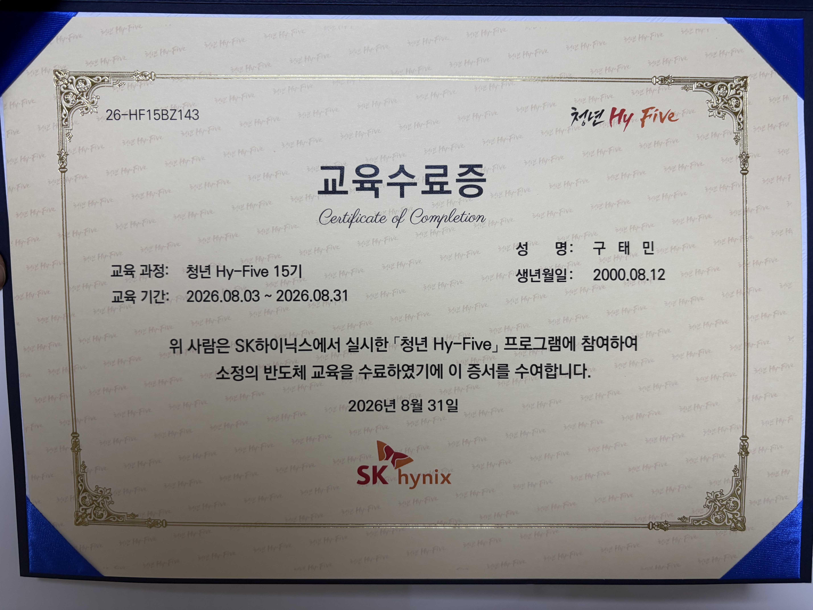
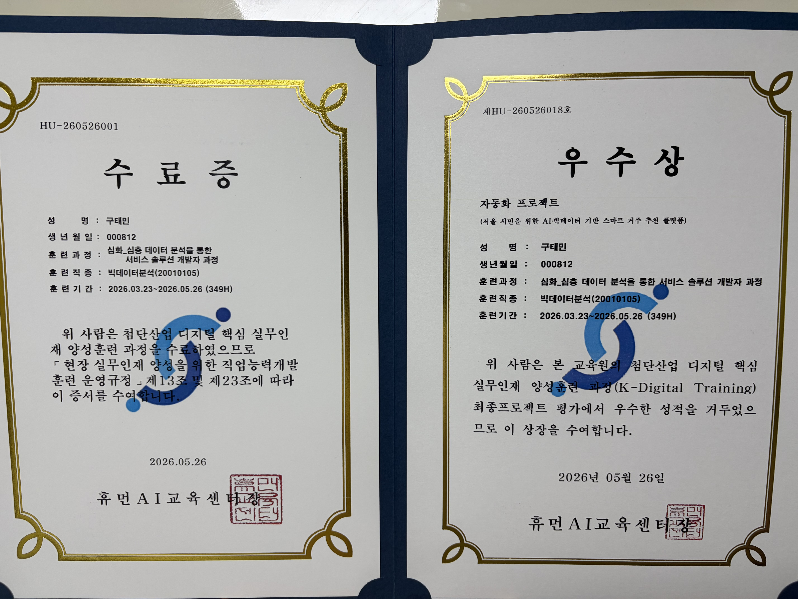
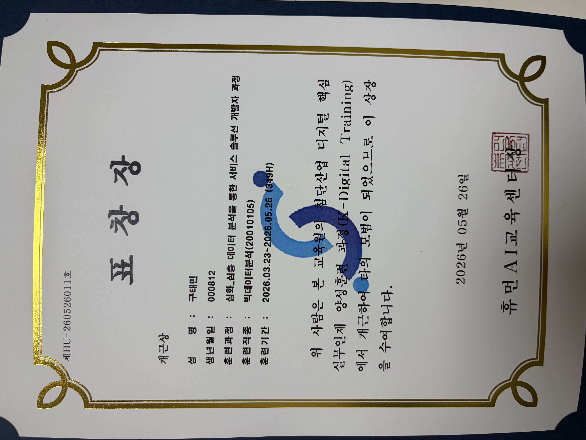

0 Project complete
사람 친화적인 신입 클라우드 엔지니어 구태민입니다.
서버와 클라이언트가 통신하는 구조에 대한 호기심에서 출발해, 직접 서버를 구축하고 Docker·Jenkins로 배포를 자동화하며 인프라에 대한 관심을 키워 왔습니다. 현재는 SK하이닉스 청년 Hy-Five 프로그램을 통해 IT 인프라 솔루션사 퓨처젠에서 물리서버, 스토리지, 가상화, AI 인프라 현업 교육을 받고 있습니다.
핵심역량
0 Project complete
물리서버, 스토리지, 뉴타닉스(가상화), AI 솔루션 팀에서 현업자에게 2주씩 순환하며 교육을 받고 있으며, IBM Vault 교육도 별도로 이수하였습니다. HCP Terraform으로 main.tf를 직접 작성해 AWS EC2를 배포하는 실습을 진행하였습니다.
SK하이닉스 주관 청년 Hy-Five 프로그램에 참여하여 반도체 공정 기초를 학습하였습니다.
데이터 전처리·엔지니어링과 ML/DL 모델 학습을 통해 AI 모델을 직접 제작하였고, FastAPI 서버 구축과 Docker·Jenkins 기반 배포 자동화까지 서비스 전 과정을 경험하였습니다. 최종 프로젝트 우수상과 개근상을 수상하였습니다.
캐나다 워킹홀리데이 기간 중 영어 과정을 수강하였습니다.
네트워크 프로그래밍 수업에서 TFTP client를 Python으로 구현하며, 네트워크를 통해 서버와 클라이언트가 데이터를 주고받는 구조에 처음 흥미를 가지게 되었습니다.
현지 취업 및 생활을 통해 글로벌 커뮤니케이션 역량을 강화하였으며, 영어 말하기 공인 성적(OPIc IH)을 보유하고 있습니다.
멘티로 참여하여 현직자에게 커리어 방향성에 대한 조언을 받았습니다.
학과 대표로 행사 기획·운영 및 학생 의견 조율을 담당하였으며, 업무 우선순위를 정리해 처리하며 전년도 대비 신입생 MT 참여율을 15% 향상시켰습니다.
고교생을 대상으로 전공 체험 멘토링을 진행하였습니다.

SK하이닉스 · 반도체 교육 수료 (2026.08.03-2026.08.31)

휴먼AI교육센터 · 심화_심층 데이터 분석을 통한 서비스 솔루션 개발자 과정 (349H) 수료 및 최종 프로젝트 우수상

휴먼AI교육센터 · K-Digital Training 과정 개근
안정적인 인프라로 회사와 함께 성장하는 클라우드 엔지니어가 되겠습니다. 연락주세요.
서울특별시 영등포구 당산동